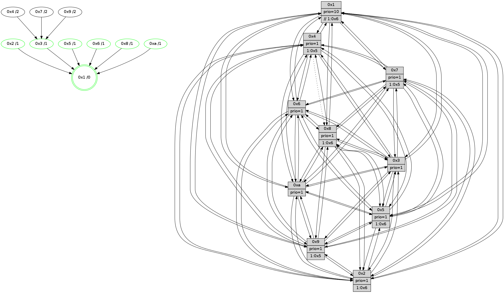

>> << IDX [start] -100 -25 -5 +0 +5 +25 +100 [1225.18411899]
 Previous packets
----------------------------------------------------------------------
1220.455334 beacon01(faad) #0 coord=01,02,03,04,05,06,07,0a,09,08 cycle=688.0ms assoc
-- color-indic=1 64 a2 d6
1220.465316 beacon02(faad) #0 coord=01,02,03,04,05,06,07,0a,09,08 cycle=688.0ms assoc 64 31 e7
1220.475316 beacon03(faad) #0 coord=01,02,03,04,05,06,07,0a,09,08 cycle=688.0ms assoc 64 4b aa
1220.485317 beacon04(faad) #0 coord=01,02,03,04,05,06,07,0a,09,08 cycle=688.0ms assoc 64 3c 40
1220.495317 beacon05(faad) #0 coord=01,02,03,04,05,06,07,0a,09,08 cycle=688.0ms assoc 64 46 0d
1220.505317 beacon06(faad) #0 coord=01,02,03,04,05,06,07,0a,09,08 cycle=688.0ms assoc 64 c8 da
1220.515318 beacon07(faad) #0 coord=01,02,03,04,05,06,07,0a,09,08 cycle=688.0ms assoc 64 b2 97
1220.525322 beacon0a(faad) #0 coord=01,02,03,04,05,06,07,0a,09,08 cycle=688.0ms assoc 64 c3 9c
1220.535323 beacon09(faad) #0 coord=01,02,03,04,05,06,07,0a,09,08 cycle=688.0ms assoc 64 4d 4b
1220.545322 beacon08(faad) #0 coord=01,02,03,04,05,06,07,0a,09,08 cycle=688.0ms assoc 64 37 06
1220.556540 [Hello(5): seq=779 sym=7,6,4,3,1,9,8,10,2 sysInfo=hasWarning stat=7:10,9,12,13/6:13,4,10,2/4:11,2,4,13/3:1,13,5,14/1:9,15,6,0/9:12,13,3,9/8:8,12,2,2/10:6,6,3,8/2:12,3,7,6]
1220.560576 [Hello(3): seq=779 sym=1,7,6,2,4,8,9,10,5 sysInfo=hasWarning stat=1:3,4,4,0/7:11,6,2,12/6:4,8,0,0/2:1,9,6,0/4:11,2,5,11/8:4,2,0,4/9:12,6,8,15/10:13,0,0,4/5:11,10,13,0]
1220.565627 [Color(3) seq=408 @0:0 prio=1]
1220.567149 [Color(10) seq=368 @0:0 prio=1]
1220.571858 [Color(6) seq=411 @0:0 prio=1]
1220.573817 [Hello(2): seq=775 sym=4,5,7,6,3,9,8,10,1 sysInfo=hasWarning stat=4:1,7,11,11/5:11,3,15,1/7:10,3,12,14/6:3,6,0,0/3:8,10,13,9/9:1,8,4,8/8:0,4,11,11/10:4,15,5,10/1:5,2,1,0]
1220.578897 [Color(2) seq=355 @0:0 prio=1 >1.@5,1.@6,1.@7,1.@8]
1220.582071 [Hello(1): seq=688 sym=4,2,9,5,10,3,8,6,7 sysInfo=coloring-mode-on,ColoringModeRequestCalled stat=4:8,13,1,0/2:14,2,9,2/9:9,14,2,0/5:1,9,2,7/10:1,11,0,7/3:3,7,5,7/8:4,5,1,0/6:13,6,11,14/7:1,4,4,14]
----------------------------------------------------------------------
1221.243464 beacon01(faad) #0 coord=01,02,03,04,05,06,07,0a,09,08 cycle=688.0ms assoc
-- color-indic=1 64 1e d3
1221.253446 beacon02(faad) #0 coord=01,02,03,04,05,06,07,0a,09,08 cycle=688.0ms assoc 64 8d e2
1221.263446 beacon03(faad) #0 coord=01,02,03,04,05,06,07,0a,09,08 cycle=688.0ms assoc 64 f7 af
1221.273449 beacon04(faad) #0 coord=01,02,03,04,05,06,07,0a,09,08 cycle=688.0ms assoc 64 80 45
1221.283448 beacon05(faad) #0 coord=01,02,03,04,05,06,07,0a,09,08 cycle=688.0ms assoc 64 fa 08
1221.293446 beacon06(faad) #0 coord=01,02,03,04,05,06,07,0a,09,08 cycle=688.0ms assoc 64 74 df
1221.303449 beacon07(faad) #0 coord=01,02,03,04,05,06,07,0a,09,08 cycle=688.0ms assoc 64 0e 92
1221.313454 beacon0a(faad) #0 coord=01,02,03,04,05,06,07,0a,09,08 cycle=688.0ms assoc 64 7f 99
1221.323451 beacon09(faad) #0 coord=01,02,03,04,05,06,07,0a,09,08 cycle=688.0ms assoc 64 f1 4e
1221.333453 beacon08(faad) #0 coord=01,02,03,04,05,06,07,0a,09,08 cycle=688.0ms assoc 64 8b 03
1221.344692 [Hello(10): seq=712 sym=6,2,3,8,7,5,9,4,1 sysInfo=hasWarning stat=6:13,4,1,1/2:2,14,5,10/3:2,12,9,11/8:3,7,15,2/7:6,8,7,6/5:1,7,0,15/9:14,13,9,3/4:8,7,7,0/1:6,8,1,1]
1221.348170 [Color(5) seq=355 @0:0 prio=1 >1.@6,1.@7,1.@8,1.@9]
1221.350049 [Hello(9): seq=723 sym=2,5,3,4,7,6,8,10,1 sysInfo=hasWarning stat=2:11,10,2,8/5:3,14,4,6/3:11,2,9,0/4:7,12,2,0/7:11,5,6,1/6:7,15,15,11/8:8,6,4,3/10:0,9,8,4/1:3,1,8,1]
1221.354214 [Hello(4): seq=779 sym=5,7,6,2,3,9,8,10,1 sysInfo= stat=5:1,9,4,0/7:7,13,7,1/6:1,4,8,12/2:7,8,15,14/3:1,15,9,12/9:12,14,11,11/8:2,6,1,0/10:3,9,0,14/1:15,13,6,1]
1221.357351 [Color(1) seq=460 @0:0 prio=10 >>1.@5,1.@6,1.@7]
1221.359097 [Hello(8): seq=723 sym=5,2,3,7,9,6,10,1 sysInfo=hasWarning stat=5:8,4,8,0/2:3,5,6,10/3:11,9,10,0/7:4,7,0,0/9:12,6,10,3/6:9,7,9,13/10:4,13,14,4/1:4,7,6,0]
1221.362751 [Color(8) seq=378 @0:0 prio=1 >1.@5,1.@6,1.@7,1.@9]
1221.366893 [Hello(7): seq=779 sym=2,3,5,6,4,8,9,10,1 sysInfo=hasWarning stat=2:9,15,15,1/3:15,6,1,0/5:0,15,13,2/6:14,12,14,9/4:15,3,10,1/8:4,6,1,0/9:5,6,1,0/10:7,10,2,6/1:8,9,4,0]
1221.370391 [Color(9) seq=352 @0:0 prio=1 >1.@5,1.@6,1.@7,1.@8]
1221.372655 [Color(4) seq=336 @0:0 prio=1 >1.@5,1.@6,1.@7,1.@8]
1221.374960 [Color(7) seq=325 @0:0 prio=1 >1.@5,1.@6,1.@9]
----------------------------------------------------------------------
1222.031598 beacon01(faad) #0 coord=01,02,03,04,05,06,07,0a,09,08 cycle=688.0ms assoc
-- color-indic=1 64 b9 a3
1222.041581 beacon02(faad) #0 coord=01,02,03,04,05,06,07,0a,09,08 cycle=688.0ms assoc 64 2a 92
1222.051580 beacon03(faad) #0 coord=01,02,03,04,05,06,07,0a,09,08 cycle=688.0ms assoc 64 50 df
1222.061581 beacon04(faad) #0 coord=01,02,03,04,05,06,07,0a,09,08 cycle=688.0ms assoc 64 27 35
1222.071581 beacon05(faad) #0 coord=01,02,03,04,05,06,07,0a,09,08 cycle=688.0ms assoc 64 5d 78
1222.081581 beacon06(faad) #0 coord=01,02,03,04,05,06,07,0a,09,08 cycle=688.0ms assoc 64 d3 af
1222.091580 beacon07(faad) #0 coord=01,02,03,04,05,06,07,0a,09,08 cycle=688.0ms assoc 64 a9 e2
1222.101588 beacon0a(faad) #0 coord=01,02,03,04,05,06,07,0a,09,08 cycle=688.0ms assoc 64 d8 e9
1222.111585 beacon09(faad) #0 coord=01,02,03,04,05,06,07,0a,09,08 cycle=688.0ms assoc 64 56 3e
1222.121586 beacon08(faad) #0 coord=01,02,03,04,05,06,07,0a,09,08 cycle=688.0ms assoc 64 2c 73
1222.133174 [Hello(1): seq=689 sym=4,2,9,5,10,3,8,6,7 sysInfo=coloring-mode-on,ColoringModeRequestCalled stat=4:8,14,1,0/2:14,2,9,2/9:9,15,2,0/5:1,9,2,7/10:2,11,0,7/3:3,7,5,7/8:5,6,1,0/6:13,6,11,14/7:2,5,4,14]
1222.136240 [Color(10) seq=369 @0:0 prio=1]
1222.138334 [Hello(2): seq=776 sym=4,5,7,6,3,9,8,10,1 sysInfo=hasWarning stat=4:2,8,11,11/5:12,4,15,1/7:11,4,12,14/6:3,6,0,0/3:8,10,13,9/9:2,9,4,8/8:1,5,11,11/10:5,15,5,10/1:6,3,1,0]
1222.141347 [Hello(6): seq=780 sym=2,3,5,4,7,9,8,10,1 sysInfo=hasWarning stat=2:6,9,2,0/3:5,6,1,12/5:14,13,4,2/4:1,12,0,5/7:10,6,11,12/9:15,14,9,9/8:11,11,5,5/10:4,13,7,12/1:6,1,6,1]
1222.143863 [Color(2) seq=356 @0:0 prio=1 >1.@5,1.@6,1.@7,1.@8]
1222.146076 [Color(6) seq=412 @0:0 prio=1]
1222.149199 [Hello(3): seq=780 sym=1,7,6,2,4,8,9,10,5 sysInfo=hasWarning stat=1:4,5,4,0/7:12,7,2,12/6:4,9,0,0/2:2,10,6,0/4:12,3,5,11/8:5,3,0,4/9:13,7,8,15/10:14,0,0,4/5:12,11,13,0]
1222.152095 [Hello(5): seq=780 sym=7,6,4,3,1,9,8,10,2 sysInfo=hasWarning stat=7:11,10,12,13/6:14,5,10,2/4:12,3,4,13/3:2,14,5,14/1:10,0,6,0/9:13,14,3,9/8:9,13,2,2/10:7,6,3,8/2:13,4,7,6]
1222.159345 [Color(3) seq=409 @0:0 prio=1]
----------------------------------------------------------------------
1222.819728 beacon01(faad) #0 coord=01,02,03,04,05,06,07,0a,09,08 cycle=688.0ms assoc
-- color-indic=1 64 05 a6
1222.829709 beacon02(faad) #0 coord=01,02,03,04,05,06,07,0a,09,08 cycle=688.0ms assoc 64 96 97
1222.839710 beacon03(faad) #0 coord=01,02,03,04,05,06,07,0a,09,08 cycle=688.0ms assoc 64 ec da
1222.849712 beacon04(faad) #0 coord=01,02,03,04,05,06,07,0a,09,08 cycle=688.0ms assoc 64 9b 30
1222.859711 beacon05(faad) #0 coord=01,02,03,04,05,06,07,0a,09,08 cycle=688.0ms assoc 64 e1 7d
1222.869712 beacon06(faad) #0 coord=01,02,03,04,05,06,07,0a,09,08 cycle=688.0ms assoc 64 6f aa
1222.879712 beacon07(faad) #0 coord=01,02,03,04,05,06,07,0a,09,08 cycle=688.0ms assoc 64 15 e7
1222.889715 beacon0a(faad) #0 coord=01,02,03,04,05,06,07,0a,09,08 cycle=688.0ms assoc 64 64 ec
1222.899717 beacon09(faad) #0 coord=01,02,03,04,05,06,07,0a,09,08 cycle=688.0ms assoc 64 ea 3b
1222.909717 beacon08(faad) #0 coord=01,02,03,04,05,06,07,0a,09,08 cycle=688.0ms assoc 64 90 76
1222.921252 [Hello(10): seq=713 sym=6,2,3,8,7,5,9,4,1 sysInfo=hasWarning stat=6:14,5,1,1/2:3,15,5,10/3:3,13,9,11/8:4,8,15,2/7:7,9,7,6/5:2,8,0,15/9:15,14,9,3/4:9,8,7,0/1:7,9,1,1]
1222.924682 [STC(1) #0.195 tree-change,inconsistent-stability,stable,to-color d=0]
1222.926022 [Hello(8): seq=724 sym=5,2,3,7,9,6,10,1 sysInfo=hasWarning stat=5:9,4,8,0/2:4,6,6,10/3:12,10,10,0/7:5,8,0,0/9:12,7,10,3/6:10,8,9,13/10:5,14,14,4/1:5,7,6,0]
1222.929063 [Color(5) seq=356 @0:0 prio=1 >1.@6,1.@7,1.@8,1.@9]
1222.931688 [Color(1) seq=461 @0:0 prio=10 >>1.@6,1.@7,1.@8]
1222.934185 [Hello(9): seq=724 sym=2,5,3,4,7,6,8,10,1 sysInfo=hasWarning stat=2:12,11,2,8/5:4,15,4,6/3:12,3,9,0/4:7,13,2,0/7:11,6,6,1/6:8,0,15,11/8:8,6,4,3/10:1,10,8,4/1:4,1,8,1]
1222.937653 [Color(9) seq=353 @0:0 prio=1 >1.@5,1.@6,1.@7,1.@8]
1222.942011 [Hello(7): seq=780 sym=2,3,5,6,4,8,9,10,1 sysInfo=hasWarning stat=2:10,0,15,1/3:0,7,1,0/5:1,0,13,2/6:15,13,14,9/4:15,3,10,1/8:4,6,1,0/9:5,6,1,0/10:8,11,2,6/1:9,9,4,0]
1222.945569 [Color(8) seq=379 @0:0 prio=1 >1.@5,1.@6,1.@7,1.@9]
1222.948732 [Hello(4): seq=780 sym=5,7,6,2,3,9,10,1 asym=8 sysInfo= stat=5:2,9,4,0/7:7,14,7,1/6:2,5,8,12/2:8,9,15,14/3:2,0,9,12/9:12,14,11,11/10:4,10,0,14/1:0,13,6,1/8:2,6,1,0]
1222.952596 [Color(4) seq=337 @0:0 prio=1 >1.@5,1.@6,1.@7,1.@8]
1222.957911 [Color(7) seq=326 @0:0 prio=1 >1.@5,1.@6,1.@9]
----------------------------------------------------------------------
1223.607858 beacon01(faad) #0 coord=01,02,03,04,05,06,07,0a,09,08 cycle=688.0ms assoc
-- color-indic=1 64 c1 a8
1223.617839 beacon02(faad) #0 coord=01,02,03,04,05,06,07,0a,09,08 cycle=688.0ms assoc 64 52 99
1223.627841 beacon03(faad) #0 coord=01,02,03,04,05,06,07,0a,09,08 cycle=688.0ms assoc 64 28 d4
1223.637840 beacon04(faad) #0 coord=01,02,03,04,05,06,07,0a,09,08 cycle=688.0ms assoc 64 5f 3e
1223.647841 beacon05(faad) #0 coord=01,02,03,04,05,06,07,0a,09,08 cycle=688.0ms assoc 64 25 73
1223.657840 beacon06(faad) #0 coord=01,02,03,04,05,06,07,0a,09,08 cycle=688.0ms assoc 64 ab a4
1223.667841 beacon07(faad) #0 coord=01,02,03,04,05,06,07,0a,09,08 cycle=688.0ms assoc 64 d1 e9
1223.677844 beacon0a(faad) #0 coord=01,02,03,04,05,06,07,0a,09,08 cycle=688.0ms assoc 64 a0 e2
1223.687846 beacon09(faad) #0 coord=01,02,03,04,05,06,07,0a,09,08 cycle=688.0ms assoc 64 2e 35
1223.697845 beacon08(faad) #0 coord=01,02,03,04,05,06,07,0a,09,08 cycle=688.0ms assoc 64 54 78
1223.708787 [Hello(1): seq=690 sym=4,2,9,5,10,3,8,6,7 sysInfo=coloring-mode-on,ColoringModeRequestCalled stat=4:9,15,1,0/2:15,3,9,2/9:10,0,2,0/5:2,9,2,7/10:3,12,0,7/3:4,8,5,7/8:5,7,1,0/6:14,7,11,14/7:3,6,4,14]
1223.717097 [STC(3)->1 #0.195 tree-change,inconsistent-stability,stable,to-color d=1]
1223.719109 [STC(10)->1 #0.195 tree-change,inconsistent-stability,stable,to-color d=1]
1223.721715 [Color(10) seq=370 @0:0 prio=1]
1223.723645 [STC(2)->1 #0.195 tree-change,inconsistent-stability,stable,to-color d=1]
1223.727506 [TreeStatus(2)-.->1 #0.195 tree-change,inconsistent-stability,stable child=1]
1223.729988 [Color(2) seq=357 @0:0 prio=1 >1.@6,1.@7,1.@8,1.@9]
1223.732954 [Hello(6): seq=781 sym=2,3,5,4,7,9,8,10,1 sysInfo=hasWarning stat=2:6,9,2,0/3:6,7,1,12/5:15,14,4,2/4:2,13,0,5/7:11,7,11,12/9:0,15,9,9/8:12,12,5,5/10:5,14,7,12/1:7,2,7,1]
1223.735775 [STC(6)->1 #0.195 tree-change,inconsistent-stability,stable,to-color d=1]
1223.737425 [TreeStatus(6)-.->1 #0.195 tree-change,inconsistent-stability,stable child=1]
1223.739257 [Color(6) seq=413 @0:0 prio=1]
1223.741748 [TreeStatus(3)-.->1 #0.195 tree-change,inconsistent-stability,stable child=1]
1223.744862 [Color(3) seq=410 @0:0 prio=1]
----------------------------------------------------------------------
1224.395989 beacon01(faad) #0 coord=01,02,03,04,05,06,07,0a,09,08 cycle=688.0ms assoc
-- color-indic=1 64 7d ad
1224.405971 beacon02(faad) #0 coord=01,02,03,04,05,06,07,0a,09,08 cycle=688.0ms assoc 64 ee 9c
1224.415971 beacon03(faad) #0 coord=01,02,03,04,05,06,07,0a,09,08 cycle=688.0ms assoc 64 94 d1
1224.425972 beacon04(faad) #0 coord=01,02,03,04,05,06,07,0a,09,08 cycle=688.0ms assoc 64 e3 3b
1224.435971 beacon05(faad) #0 coord=01,02,03,04,05,06,07,0a,09,08 cycle=688.0ms assoc 64 99 76
1224.445972 beacon06(faad) #0 coord=01,02,03,04,05,06,07,0a,09,08 cycle=688.0ms assoc 64 17 a1
1224.455975 beacon07(faad) #0 coord=01,02,03,04,05,06,07,0a,09,08 cycle=688.0ms assoc 64 6d ec
1224.465978 beacon0a(faad) #0 coord=01,02,03,04,05,06,07,0a,09,08 cycle=688.0ms assoc 64 1c e7
1224.475978 beacon09(faad) #0 coord=01,02,03,04,05,06,07,0a,09,08 cycle=688.0ms assoc 64 92 30
1224.485976 beacon08(faad) #0 coord=01,02,03,04,05,06,07,0a,09,08 cycle=688.0ms assoc 64 e8 7d
1224.497385 [Hello(7): seq=781 sym=2,3,5,6,4,8,9,10,1 sysInfo=hasWarning stat=2:10,1,0,2/3:1,8,2,1/5:1,0,13,2/6:0,14,15,10/4:15,3,10,1/8:4,6,1,0/9:5,6,1,0/10:9,12,2,6/1:10,9,4,0]
1224.500400 [Hello(9): seq=725 sym=2,5,3,4,7,6,8,10,1 sysInfo=hasWarning stat=2:13,12,3,9/5:5,15,4,6/3:12,4,10,1/4:8,14,2,0/7:12,7,6,1/6:9,1,0,12/8:8,7,4,3/10:2,11,8,4/1:5,1,8,1]
1224.502906 [Hello(10): seq=714 sym=6,2,3,8,7,5,9,4,1 sysInfo=hasWarning stat=6:15,6,2,2/2:3,0,6,11/3:3,14,9,12/8:5,9,15,2/7:8,10,7,6/5:2,9,0,15/9:0,15,9,3/4:10,9,7,0/1:8,10,2,1]
1224.505830 [Color(5) seq=357 @0:0 prio=1 >1.@6,1.@7,1.@8,1.@9]
1224.507846 [STC(9)->3-.->1 #0.195 tree-change,inconsistent-stability,to-color d=2]
1224.511678 [Color(1) seq=462 @0:0 prio=10 >>1.@6,1.@7,1.@8]
1224.513646 [Hello(8): seq=725 sym=5,2,3,7,9,6,4,10,1 sysInfo=hasWarning stat=5:10,4,8,0/2:5,7,7,11/3:12,11,11,1/7:5,9,0,0/9:12,7,10,3/6:11,9,10,14/4:0,1,0,0/10:6,15,14,4/1:6,7,6,0]
1224.516803 [Hello(4): seq=781 sym=5,7,6,2,3,9,10,1 asym=8 sysInfo= stat=5:3,9,4,0/7:7,15,7,1/6:3,6,9,13/2:9,10,0,15/3:2,1,10,13/9:12,14,11,11/10:5,11,0,14/1:1,13,6,1/8:2,6,1,0]
1224.520342 [STC(4)->3-.->1 #0.195 tree-change,inconsistent-stability,to-color d=2]
1224.523318 [Color(8) seq=380 @0:0 prio=1 >1.@6,1.@7,1.@9,1.@a]
1224.529699 [STC(7)->3-.->1 #0.195 tree-change,inconsistent-stability,to-color d=2]